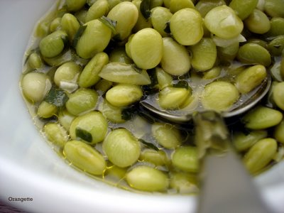

Lima beans, long overdue
I know, I know. I keep you waiting for a whole week, and then I arrive with nothing to show for myself but a bowl of lima beans and a mouthful of garlic breath. As my mother would say, “Hmph! She’s got a lot of nerve.” Well, yeah, I guess I do.

But if it makes you feel any better about our relationship, dear reader, know that I had planned to bring you cupcakes instead—and awfully good ones, at that. I was aiming to recreate in cake form the chocolate malted milkshakes of my childhood, the kind that I slurped through pink-and-white striped straws at Braum’s Ice Cream and Dairy Stores throughout the state of Oklahoma. Sadly, though, the cupcakes and I had a run-in when they decided to turn into something with the texture of a kitchen sponge, and when they tasted more like a cheap, too-sweet, boxed cake than a chewable incarnation of my beloved chocolate malt. It was a hard weekend, to say the least, and in the end, the best part was finding, in a fit of desperation, a package of baby lima beans in the back of the freezer.
Now, I know that the words “lima beans” are not, for most people, synonymous with “delicious.” A lima bean is nobody’s chocolate malt. But I have long loved its mild, green flavor and its soft, starchy creaminess, and I should have written about this dish a long time ago.

I stumbled upon this recipe almost three years ago now, in an old issue of Gourmet. It quickly became a standby, calling, as it does, for only a few basic ingredients: a pack of baby limas, a glug of olive oil, a handful of parsley, and an unflinching dose of garlic, plus a little water and salt to hold it all together. I could eat these lima beans like candy, by the handful. I go after them first with my fork, and then I follow with hunks of coarse, crusty bread to sop up the sweet, oil-dotted broth. It may be a modest dish in appearance and name, but under a sheen of grassy olive oil and a pungent cloud of garlic, these lima beans taste better, I think, than most cupcakes. Or mediocre chocolate malt ones, at least.
Greek-Style Lima Beans
Adapted from Gourmet, November 2003
Although this recipe was originally published in early months of winter, it tastes like spring to me. Conveniently, it is also a perfect receptacle for the Italian parsley left over from a batch of poached halibut. You could also try this method with fava beans rather than limas, I’ll bet, if you’re feeling especially bold and brazen. Whatever you do, be sure to serve this with plenty of good, crusty bread: you won’t want to lose a drop of the broth.
1 (10 oz.) package frozen baby lima beans
1 cup water
2 Tbs good-quality olive oil, plus more for serving, if you like
2 Tbs coarsely chopped fresh Italian parsley
1 Tbs minced garlic
½ tsp salt
In a medium heavy saucepan, combine the lima beans, water, olive oil, parsley, garlic, and salt. Place the pan over medium heat, and cook, covered but stirring occasionally, until the beans are tender, about 15-20 minutes.
Transfer to a serving bowl, and serve, drizzled with more olive oil, if you like.
{kind=link}
Yield: About 4 side servings